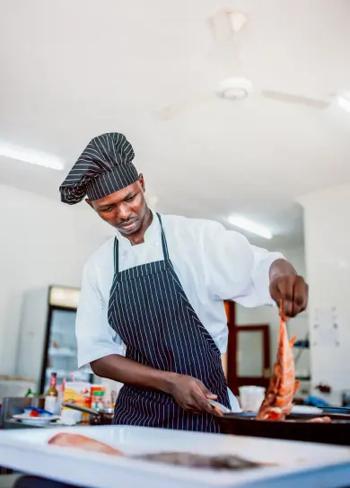
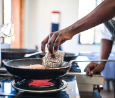
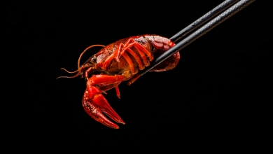

Savour real Seafood
With a deep-rooted love for all things seafood, our talented chefs combine culinary expertise with creativity to craft dishes that celebrate the ocean's treasures.
Emperor's Cooking Dynasty:
The History of Our Cuisine
Our esteemed chef, renowned for their passion and expertise in seafood cuisine, elevates the freshest catches into culinary works of art that will delight your senses. With an unwavering dedication to sourcing the highest quality seafood, our chef is deeply committed to sustainability and responsible fishing practices, ensuring that each ingredient is not only delicious but also ethically sourced.
Drawing inspiration from global flavors and techniques, our chef combines traditional culinary wisdom with innovative approaches to create unforgettable dishes. From succulent crab cakes with a hint of Cajun spice to seared tuna atop a bed of vibrant seaweed salad.
- 
- 
- 